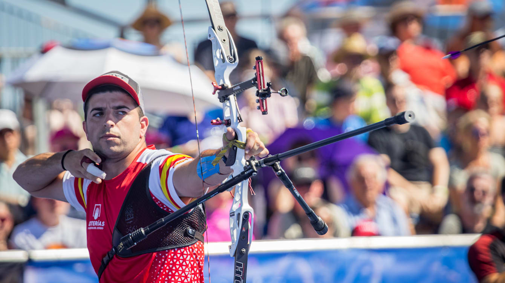

Mundial de tiro con arco 2023
¡Arranco el Mundiaaal! Muchaaachooos..!
El Campeonato del Mundo de tiro con arco 2023 se celebra en Berlín, Alemania, del 31 de julio al 6 de agosto y reparte un gran número de cuotas para los Juegos Olímpicos de París 2024.
El Mundial de tiro con arco 2023 será el primer gran evento de este deporte clasificatorio para los Juegos Olímpicos de París 2024 en este deporte. Las primeras plazas se repartieron en los recientes Juegos Europeos de 2023 en Cracovia, donde España obtuvo dos para sus atletas, pero en Berlín habrá hasta 24 en juego. La capital alemana recibirá más de 500 arqueros llegados de todo el mundo para competir en 10 eventos. De ellos, alrededor de 300 lo harán en la modalidad de arco recurvo, disciplina olímpica que reparte los billetes a los Juegos del próximo año. La competición se celebra del 31 de julio al 6 de agosto en Maifeld y la Olympischer Platz, en el Parque Olímpico de Berlín
La República de Corea es una de las grandes potencias en tiro con arco recurvo. An San se convirtió en la primera arquera que lograba tres medallas de oro en una misma edición de los Juegos Olímpicos en Tokio 2020. Ella y su compañera Choi Mi-sun encontrarán sus mayores rivales en las británicas Penny Healey y Bryony Pitman, primera y segunda respectivamente del ranking mundial. Healey, de solo 18 años, ganó el oro en los Juegos Europeos 2023.
En categoría masculina, el actual campeón del mundo es Kim Woo-jin, doble campeón olímpico por equipos con la República de Corea. Sin embargo, desde su victoria en Yankton 2021, Kim solo ha competido dos veces internacionalmente fue quinto y noveno en dos Copas del Mundo. El brasileño Marcus d'Almeida, el hombre al que derrotó en la final de 2021, es el número uno del mundo y ya acumula dos victorias este año.